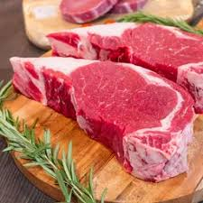
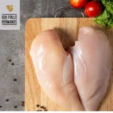
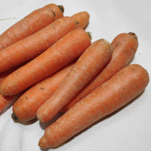
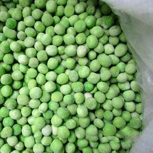
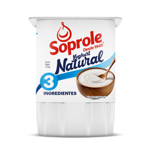
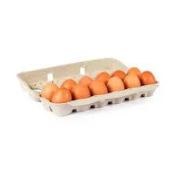
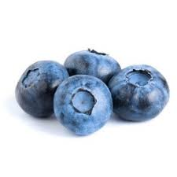

Carne de Res
Moderación recomendada: 2-3 veces por semana.

Pollo
Moderación recomendada: 3-4 veces por semana.

Zanahorias
Moderación recomendada: 1-2 veces por semana.

Papas
Moderación recomendada: 1 vez por semana.

Brócoli
Moderación recomendada: 1 vez por semana.

Guisantes
Moderación recomendada: 2-3 veces por semana.

Calabaza
Moderación recomendada: 1 vez por semana.

Yogurt Natural
Moderación recomendada: 2 veces por semana.

Manzanas
Moderación recomendada: 1 vez por semana.

Arroz Integral
Moderación recomendada: 3 veces por semana.

Huevo
Moderación recomendada: 2-3 veces por semana.

Manzanas
Moderación recomendada: 2-3 veces por semana.